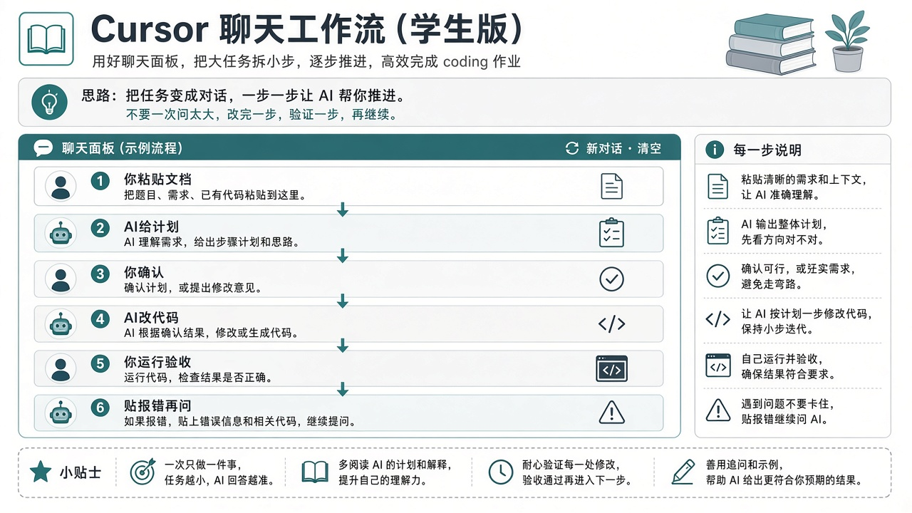

0. 交互总规则（先背这 6 条）
- 一次一事：本轮只做「写计划 / 改 A / 调一组超参 / 画一张图」之一。
- 先计划后改代码：让 Cursor 列出要动的文件，你回「按这个做」再允许大改。
- 用 @ 给上下文：文档、配置、报错相关脚本要
@进对话，别假设它记得上周的话。 - 你负责运行：AI 给命令，你在终端执行；把输出或报错原文贴回去。
- 数字说话：调参时贴表格（方法、超参、指标），不要说「好像高了一点」。
- 顺序锁死：A 超 baseline → B 超 baseline → Full 超 A 且超 B → 再分析。
Cursor 可能直接改文件或跑终端（视模式/授权）。看不懂的命令先问「这条干什么」，再点允许。
辅导逻辑（写死——不是让 Cursor「提炼」出来的）
下面四条是辅导流程的固定标准。创新点文档只负责说明「A/B 技术上改什么、Full 怎么接」；成功标准一律按本节执行，不要让 AI 自行总结成别的过关条件。
1）创新点 A 改什么
只启用文档里的第一个创新模块/改动，其余保持与 baseline 相同（数据划分、评估协议、训练入口一致）。代码上表现为 method=innov_A（或等价开关：开 A、关 B）。
本阶段目标：通过调参，使 innov_A 的效果全面超过 baseline，证明「单点 A 本身有效」。未达标前禁止做 B，更禁止做 Full。
2）创新点 B 改什么
只启用文档里的第二个创新模块/改动，关闭 A。公共代码改动不得破坏已验证的 A。代码上表现为 method=innov_B（开 B、关 A）。
本阶段目标：同样通过调参，使 innov_B 全面超过 baseline，证明「单点 B 本身有效」。A、B 都达标后，才允许进入 Full。
3）Full 如何组合
按创新点文档规定的方式同时启用 A 与 B（串联/并联/损失加权/门控等以文档为准），配置为 method=full。不要另起一套与单点实现不一致的「第三套私货」。
注意：单点各自最优超参直接相加，往往不是 Full 最优；组合相关权重、学习率等通常要重新调。
4）成功标准（辅导固定，勿改写）
以下标准由辅导流程规定，不是从文档里「提炼」出来的，也不要让 Cursor 改成别的过关说法。
- 相对 baseline（单点阶段）：innov_A、innov_B 必须分别调参到全面超过 baseline（主指标更高；约定的次要指标不得「主升次崩」，除非老师书面允许）。评估协议与 baseline 完全一致。
- 相对单点（Full 阶段）：两个单点都验证有效之后，再调 Full；Full 的主指标必须同时超过调好的 innov_A 与 innov_B。这时才说明「完整方法（组合）有效」。
- Full 未超单点：不算过关。应回头查组合实现是否偏离文档、或继续调组合超参；禁止用「只跟 baseline 比已经涨了」搪塞。
- 出数之后再分析：对照表齐了，才做参数分析、可视化（降维/聚类/热力等）、案例分析、错误分析。分析不能代替涨点证明。
流程一句话
锁 baseline → 做 A 并调到超 baseline → 做 B 并调到超 baseline → 做 Full 并调到超 A 且超 B → 再补参数/可视化/案例/错误分析。
1. 对话长什么样

下面每一步都按同一模板写：你在 Cursor 里做什么 → 复制发送的话 → AI 通常回什么 → 你怎么验收 → 下一句怎么接。
第 0 步：打开已复现的仓库
你做：Cursor → Open Folder → 选中已能跑 baseline 的项目根目录（含训练脚本与 README）。
你发：
请确认当前工作区是项目根目录。
列出：训练入口脚本、配置文件、评估脚本路径。
不要改代码。我只想确认 baseline 入口在哪。你验收：路径说得对；你能按它指的命令自己跑通一次 baseline（数字记下来）。
你接下一轮：「baseline 主指标是 ____，记录在 notes/baseline.md。下一步放创新点文档。」
第 1 步：放入创新点文档——只核对「改什么」，成功标准直接粘贴写死
你做：把老师给的文档存为 docs/innovation.md。
分工要分清：
- 文档里让 Cursor 核对的：A 技术上改哪、B 技术上改哪、Full 按文档怎么接
- 不要让 Cursor「提炼成功标准」——成功标准已在上文「辅导逻辑」写死，对话里直接粘贴给它遵守
你发（推荐整段复制）：
我已添加 @docs/innovation.md 。
请用中文核对文档（只做技术理解，先不要写代码）：
1）创新点 A：具体改哪个模块/损失/结构？开关打开后与 baseline 差在哪？
2）创新点 B：具体改哪个模块/损失/结构？与 A 是否正交、有没有改同一处？
3）Full：文档要求如何同时启用 A 与 B（串联/并联/加权/门控等）？
成功标准【固定，禁止改写或重新提炼】：
- innov_A、innov_B 必须分别调参到「全面超过 baseline」（同数据划分、同评估协议）
- 两个单点都有效后，再做 full；full 主指标必须同时超过调好的 innov_A 与 innov_B
- 未达上述标准前，不要进入下一阶段，也不要开始写可视化证明有效
若文档对 A/B/组合写法有含糊处，只就技术实现提问；不要讨论或修改成功标准。AI 通常回：A/B/组合的技术摘要 + 实现向澄清问题。
你验收：技术摘要与老师文档一致；若它改写了成功标准，立刻纠正：「成功标准按我上面四条执行，不要改。」
你接下一轮：「技术理解正确。成功标准已固定。下一步只出实现计划，仍不写代码。」
第 2 步：先要实现计划（禁止直接开写）
你发：
基于 @docs/innovation.md 与当前 baseline 代码（你刚列出的入口）。
请给出实现计划：
- 需要新建/修改哪些文件
- 如何用配置切换 baseline | innov_A | innov_B | full
- 保证数据与评估协议与 baseline 一致的具体做法
仍不要改代码。等我回复「按计划执行」后再动文件。你验收：计划里有三套可切换方式；没有「顺便重构半个仓库」。
你接下一轮：「按计划执行，但本轮只实现 innov_A（B 先关掉）。」
为什么拆开？一次生成 A+B+Full，出 bug 时你分不清是 A 的问题还是组合问题，调参叙事也会塌。
第 3 步：生成单创新点 A（对话）
你发：
按计划执行：只实现 innov_A。
要求：
1）配置 method=innov_A 时启用 A，method=baseline 时行为与原来一致
2）不要实现 B / full
3）改完后告诉我：怎么启动训练、日志写到哪
改完用简短 diff 说明触碰了哪些文件。你做：看它改了哪些文件；有「允许运行」先看命令。
你验收（运行）：
# 示例，以项目真实命令为准
python train.py --config configs/innov_A.yaml能跑起来即可；这一步不要求已经超过 baseline。
若报错，你接：
命令：……
完整报错：
……
请只做最小修复，不要改评估协议，不要顺手开 B。跑通后你接：「A 已能跑。下一步：在与 baseline 相同设定下出数，并指导我调参超过 baseline。」
第 4 步：用对话把 A 调到超过 baseline
这是最长的多轮循环。每一轮只改少量超参。
第一轮你发：
评估协议必须与 baseline 相同。
baseline 主指标=____（见 @notes/baseline.md）。
请给出 innov_A 的「第一组」训练命令（超参尽量先与 baseline 相同），
以及跑完后我应记录哪些数字。你跑完贴回：
本轮结果：
method=innov_A
超参：lr=… epoch=… …
主指标=…
次要指标=…
相对 baseline：主指标差 ____
请建议下一组实验：只允许改 1～2 个超参，说明理由。
目标：全面超过 baseline（主指标升，次要指标按文档要求）。重复「建议 → 你跑 → 贴表」直到达标。把每次结果追加进 notes/exp_log.md（可让 Cursor 帮你整理，但数字以你跑的为准）。
达标后你发：
innov_A 已全面超过 baseline。请把最优超参与指标写入 @notes/ablate_table.md。
下一步不要动 A。开始只做 innov_B。完成 0 / 3 步
第 5 步：单点 B（交互同构，但要防串改）
你发：
现在只实现 innov_B（关闭 A）。
不要修改 innov_A 已验证的实现逻辑。
同样：先简述你要改的文件，我确认后你再改。
B 跑通后，用与 A 相同的调参对话方式，直到全面超过 baseline。防串改验收：再跑一次 method=innov_A，指标应与之前最优接近；若崩了，说明 B 的改动污染了公共代码——立刻让 Cursor 隔离。
我改完 B 后，innov_A 指标异常下降。
请检查公共路径是否被改坏；最小修复，恢复 A 行为，并保证 B 仍可开关。第 6 步：Full——对话里强调「超单点」
前置你已勾选：A、B 都超 baseline。
你发：
A、B 均已单独调参并全面超过 baseline（见 @notes/ablate_table.md）。
请按 @docs/innovation.md 实现 full（A+B 同时开，组合方式以文档为准）。
成功标准【固定】：full 主指标必须同时超过调好的 innov_A 与 innov_B；
只跟 baseline 比涨点不够。
先给计划：组合方式、要动的配置/模块、默认超参从哪来。
确认前不要改代码。确认后：「按计划实现 full。实现后给我一条训练命令。」
出数后贴：
当前 full 主指标=____
innov_A 最优=____
innov_B 最优=____
baseline=____
固定目标：full 同时超过 A 与 B（不是只超过 baseline）。
请只建议下一组组合相关超参（如两模块 loss 权重、lr），不要改单点已验证实现。同样多轮「建议→跑→贴表」，直到 Full 达标，写入 ablate_table。
若 Cursor 提议「把 A 改弱一点让组合好看」——拒绝。应改组合超参或按文档修组合实现，而不是毁掉已验证的单点。
第 7 步：参数分析（怎么交互）
你发：
请阅读 @notes/exp_log.md 与 @notes/ablate_table.md。
从已有调参记录中选出 1～2 个对 full 最关键的超参。
请生成脚本：固定其它为最优，扫描该超参并画出主指标曲线，图保存到 outputs/analysis/。
先给脚本计划与命令，我同意后再写文件。你跑图 → 贴路径给它：「图在 outputs/analysis/xxx.png。请用三句话写进 notes/param_analysis.md：最优在哪、过大过小怎样。」
第 8 步：可视化（怎么交互）
你发：
请补齐可视化（先选与创新点最相关的 1～2 种）：
- baseline vs full 的特征 t-SNE/UMAP 对照
- 或混淆矩阵热力图
- 或文档相关的注意力/相关热力图
要求：同一批样本、固定随机种子；脚本可复现；不要重新全量训练（优先用已有 checkpoint 抽特征）。
先列计划与需要我提供的权重路径。你补充：「baseline 权重在 ____，full 权重在 ____。」再让它写脚本。
你验收：两张对照图都生成；能说清「Full 相对 baseline 在图上好在哪里」。
第 9 步：案例分析 + 错误分析（怎么交互）
你发：
请基于 test 预测结果：
1）导出 6～8 个「baseline 错、full 对」的案例列表（含 id/路径/真值/两模型预测）
2）导出混淆矩阵，并指出 top 混淆类别对
3）写 notes/error_analysis.md：失败仍集中在哪、方法局限是什么
先不要美化到不诚实；允许写不足。你验收：案例打得开；错误分析不是空话「未来工作」套模板。
一轮标准来回（请背下来）
- 你：目标 + @文件 + 约束（别改什么）+「先计划」
- AI：计划
- 你：「按计划执行」或「改计划第 x 条」
- AI：改代码 / 给命令
- 你：运行，贴指标或完整报错
- AI：最小修复或下一组超参
- 你：写入 notes，宣布进入下一阶段
辅导时老师可以盯的，就是学生会不会走这 7 拍，而不是会不会「让 AI 一次生成整篇论文代码」。
学生常犯的交互错误
- 「把创新点和 Full 一次性写完并调到最好」→ 必乱
- 让 AI「提炼成功标准」→ 标准被改软；应粘贴辅导写死的四条
- 不 @ 文档，口头说「就是那个注意力」→ AI 瞎编
- 不贴完整报错，只说「又不行了」
- 调参不贴旧数字，AI 无法对比
- 允许执行没看过的
rm -rf/ 覆盖数据命令 - Full 没超单点就开始要可视化「证明很好」
- 同一聊天无限延长、上下文混乱——重要阶段可新开 Chat，并 @ 关键 notes
过关自检（考的是交互能力）
完成 0 / 10 项